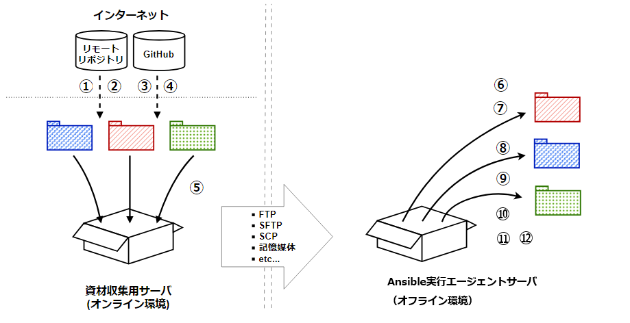

Ansible Execution Agent - Offline¶
目的¶
Tip
前提条件¶
注釈
全体の流れ¶
{kind=link}

オンライン環境での手順¶
オフライン環境での手順¶
オンライン環境(インターネットに接続できる環境)での作業¶
①RPMパッケージのダウンロード¶
作業ディレクトリの作成¶
mkdir offline_install_packages
cd offline_install_packages
Python 3.11関連RPMのダウンロード¶
# yum-utilsのインストール（yumdownloaderコマンドに必要）
sudo yum install yum-utils -y
# Python 3.11用ディレクトリの作成
mkdir -p python311-rpms
cd python311-rpms
# Python 3.11とその依存パッケージをダウンロード
yumdownloader --resolve python3.11 python3.11-pip python3.11-devel
# 元のディレクトリに戻る
cd ..
gcc関連RPMのダウンロード¶
# gcc用ディレクトリの作成
mkdir -p gcc-packages
# gccと依存パッケージをダウンロード
dnf download --resolve --alldeps --releasever=8.9 --destdir=gcc-packages \
gcc gcc-c++ make kernel-headers
# glibc関連パッケージをダウンロード
dnf download --destdir=gcc-packages --releasever=8.9 \
glibc glibc-common glibc-devel glibc-headers
言語パックのダウンロード¶
# 言語パック用ディレクトリの作成
mkdir -p langpacks-en-packages
# 言語パックをダウンロード
dnf download --resolve --alldeps --destdir=langpacks-en-packages langpacks-en
createrepoのダウンロード¶
# createrepo用ディレクトリの作成
mkdir -p createrepo
cd createrepo
# createrepoをダウンロード
dnf download --resolve createrepo
# 元のディレクトリに戻る
cd ..
podman関連RPMのダウンロード¶
注釈
# podman用ディレクトリの作成
mkdir -p podman_rpms
cd podman_rpms
# podmanと依存パッケージをダウンロード
yumdownloader --resolve podman
# 元のディレクトリに戻る
cd ..
②Pythonパッケージのダウンロード¶
Python 3.11のインストール¶
# Python 3.11のインストール
sudo dnf install python3.11 python3.11-pip python3.11-devel -y
# インストール確認
python3.11 --version
python3.11 -m pip --version
# pipのアップグレード
python3.11 -m pip install --upgrade pip
root用Pythonパッケージのダウンロード¶
# root用パッケージディレクトリの作成
mkdir -p pip_packages_root
# keyrings.altのダウンロード
python3.11 -m pip download keyrings.alt -d ./pip_packages_root
一般ユーザー用Pythonパッケージのダウンロード¶
# 一般ユーザー用パッケージディレクトリの作成
mkdir -p pip_packages_user
# pipのダウンロード
python3.11 -m pip download pip -d ./pip_packages_user
# requestsのダウンロード（AlmaLinux 8.9 x86_64向け）
python3.11 -m pip download requests \
--platform manylinux_2_28_x86_64 \
--python-version 311 \
--only-binary=:all: \
-d ./pip_packages_user
# poetryのダウンロード
python3.11 -m pip download poetry==1.6.0 -d ./pip_packages_user
# cryptographyのダウンロード
python3.11 -m pip download cryptography \
--platform manylinux_2_28_x86_64 \
--python-version 311 \
--only-binary=:all: \
-d ./pip_packages_user
③各種パッケージのダウンロード¶
# docker-composeのダウンロード
sudo curl -L https://github.com/docker/compose/releases/download/v2.20.3/docker-compose-Linux-x86_64 \
-o docker-compose
# 実行権限を付与
chmod +x docker-compose
注釈
-x ${https_proxy} オプションを追加してください。④エージェントリソースのダウンロード¶
gitの設定確認¶
# gitのバージョン確認
git --version
# 未インストールの場合のみ実施
# sudo dnf install git -y
# gitの設定確認
git config --global --list
# 設定されていない場合は設定
# git config --global user.name "your_name"
# git config --global user.email "your_email@example.com"
Exastroソースコードのクローン¶
# リポジトリのクローン
git clone https://github.com/exastro-suite/exastro-it-automation.git
# 特定のバージョンをチェックアウトする場合
# cd exastro-it-automation
# git checkout <バージョンタグまたはブランチ>
# cd ..
注釈
requirements.txtの作成¶
vi requirements.txt
ansible-builder
ansible-runner
attrs
bindep
certifi
charset-normalizer
click
clickclick
colorama ; platform_system == "Windows"
connexion[swagger-ui,uvicorn]
distro
flask
idna
importlib-metadata ; python_version < "3.10"
inflection
itsdangerous
jinja2
jsonschema-specifications
jsonschema
lockfile
markupsafe
packaging
parsley
pbr
pexpect
pip
ptyprocess
pycryptodome
python-daemon
python-dotenv
pytz
pyyaml
referencing
requests-toolbelt
requests
rpds-py
setuptools
six
swagger-ui-bundle
urllib3
werkzeug
zipp ; python_version < "3.10"
注釈
requirements.txt用Pythonパッケージのダウンロード¶
注釈
# packagesディレクトリの作成
mkdir -p packages
# requirements.txtに基づいてパッケージをダウンロード
python3.11 -m pip download -r requirements.txt -d ./packages
⑤実行環境コンテナイメージのビルド¶
前提条件の確認¶
# podmanのインストール確認
podman --version
# または、dockerのインストール確認
# docker --version
注釈
# podmanの場合：
sudo dnf install -y podman --allowerasing
# dockerの場合：
sudo dnf install -y docker
sudo systemctl start docker
sudo systemctl enable docker
ベースイメージのダウンロード¶
# ubi9/ubi-initイメージをpull
podman pull registry.access.redhat.com/ubi9/ubi-init
ビルド設定ファイルの作成¶
# ビルド用ディレクトリの作成
mkdir -p build
cd build
# 証明書ディレクトリの作成
mkdir -p files/certs
# 証明書をコピー
cp /usr/share/pki/ca-trust-source/anchors/ZscalerRootCertificate.cer files/certs/ZscalerRootCertificate.cer
注釈
execution-environment.j2 の作成
vi execution-environment.j2
version: 3
build_arg_defaults:
ANSIBLE_GALAXY_CLI_COLLECTION_OPTS: '--ignore-certs'
images:
base_image:
name: "registry.access.redhat.com/ubi9/ubi-init:latest"
dependencies:
ansible_core:
package_pip: "ansible_core"
ansible_runner:
package_pip: "ansible_runner"
system: "builder.txt"
python: "requirements.txt"
galaxy: "galaxy_collection_requirements.yml"
python_interpreter:
package_system: "python311"
python_path: "/usr/bin/python3.11"
# --- Offline artifacts ---
# AWS CLI等の追加ツールが必要な場合は、以下のコメントを解除してください
#additional_build_files:
# - src: awscli-exe-linux-x86_64.zip
# dest: files
additional_build_steps:
prepend_base: |
RUN yum -y remove python3-requests || microdnf remove -y python3-requests || true
append_base:
- RUN /usr/bin/python3.11 -m pip install --upgrade pip
- RUN /usr/bin/python3.11 -m pip install bindep pyyaml packaging
- RUN $PYCMD -m pip install --no-cache-dir 'dumb-init==1.2.5'
- RUN update-crypto-policies --set DEFAULT:SHA1
# AWS CLI v2 (offline) - 必要な場合のみコメント解除
#- ADD _build/files/awscli-exe-linux-x86_64.zip /tmp/awscliv2.zip
#- RUN dnf -y install unzip && dnf clean all
#- RUN unzip /tmp/awscliv2.zip -d /tmp && /tmp/aws/install && rm -rf /tmp/aws /tmp/awscliv2.zip
#- RUN aws --version
options:
package_manager_path: "/usr/bin/dnf"
user: root
注釈
# AWS CLIのダウンロード
curl -O https://awscli.amazonaws.com/awscli-exe-linux-x86_64.zip
builder.txt の作成
vi builder.txt
openssh-clients
sshpass
expect
git
手順④で作成したrequirements.txtをbuildディレクトリにコピー
cp ~/offline_install_packages/requirements.txt .
galaxy_collection_requirements.yml の作成
vi galaxy_collection_requirements.yml
collections:
- amazon.aws
- community.aws
- azure.azcollection
- vmware.vmware
- cisco.ios
- f5networks.f5_bigip
- community.general
- oracle.oci
- google.cloud
注釈
ansible-builderのインストール¶
# ansible-builderのインストール
python3.11 -m pip install ansible-builder==3.1.0
コンテナイメージのビルド¶
# イメージのビルド
ansible-builder build -t ＜イメージ名＞ -f execution-environment.j2
# ビルド完了確認
podman images | grep ＜イメージ名＞
注釈
-t オプションで指定するイメージ名は任意の名前を設定できます（例：ansible_execution_agent ）。コンテナイメージのエクスポート¶
# イメージをtar.gzファイルにエクスポート
podman save -o images.tar.gz localhost/＜イメージ名＞:latest
# offline_install_packagesディレクトリにコピー
cp -p images.tar.gz ../
# 元のディレクトリに戻る
cd ~/offline_install_packages
資材のアーカイブ作成¶
# 親ディレクトリに移動
cd ~
# 資材をtar.gzで圧縮
tar cvfz offline_install_packages.tar.gz offline_install_packages
# アーカイブファイルのサイズ確認
ls -lh offline_install_packages.tar.gz
資材の転送¶
注釈
Python 3.11およびgcc等のRPMパッケージ
root用およびユーザー用Pythonパッケージ
docker-composeバイナリ
Exastroソースコード
実行環境コンテナイメージ
オフライン環境(インターネットに接続できない環境)での作業¶
⑥環境準備（SELinux無効化、ユーザー作成等）¶
注釈
資材の展開¶
# 資材の展開
tar xvfz offline_install_packages.tar.gz
cd offline_install_packages
Firewallの設定（任意）¶
# Firewallの状態確認
systemctl status firewalld
# firewalldの停止
sudo systemctl stop firewalld
# firewalldの無効化（自動起動の無効化）
sudo systemctl disable firewalld
SELinuxの無効化¶
# 現在の状態確認
getenforce
# SELinuxがEnforcingの場合、一時的にPermissiveに変更
sudo setenforce 0
# 再度確認（Permissiveになっていることを確認）
getenforce
# 恒久的に無効化（設定ファイルの編集）
sudo sed -i 's/SELINUX=enforcing/SELINUX=disabled/' /etc/selinux/config
# 設定を反映するため再起動
sudo reboot
重要
エージェント実行ユーザーの作成¶
# グループの作成（GID: 6000）
sudo groupadd -g 6000 exastro_user
# ユーザーの作成（UID: 6000）
sudo useradd -g 6000 -u 6000 exastro_user
sudoers設定¶
# sudoers設定ファイルの作成
sudo bash -c 'echo "exastro_user ALL = (root) NOPASSWD: ALL" > /etc/sudoers.d/exastro_user'
# 権限の確認
sudo cat /etc/sudoers.d/exastro_user
⑦RPMパッケージのインストール¶
Python 3.11のインストール¶
# python311-rpmsディレクトリに移動
cd ~/offline_install_packages/python311-rpms
# RPMパッケージのインストール
sudo yum localinstall *.rpm -y
# インストール確認
python3.11 --version
python3.11 -m pip --version
# 元のディレクトリに戻る
cd ~/offline_install_packages
createrepoのインストール¶
# createrepoディレクトリに移動
cd ~/offline_install_packages/createrepo
# drpmを先にインストール
sudo rpm -ivh drpm-0.4.1-3.el8.x86_64.rpm
# createrepoをインストール
sudo rpm -Uvh createrepo*.rpm
# 元のディレクトリに戻る
cd ~/offline_install_packages
gcc関連パッケージのインストール¶
# ローカルリポジトリ設定ファイルの作成
sudo tee /etc/yum.repos.d/local.repo > /dev/null <<EOF
[local]
name=Local RPMs
baseurl=file:///home/almalinux/offline_install_packages/gcc-packages
enabled=1
gpgcheck=0
EOF
# gcc-packagesディレクトリに移動
cd ~/offline_install_packages/gcc-packages
# リポジトリメタデータの作成
sudo createrepo .
# yumキャッシュのクリアと再作成
sudo yum clean all
sudo yum makecache
# gccと依存パッケージのインストール
sudo dnf install -y gcc glibc-devel kernel-headers --disablerepo='*' --enablerepo=local
# リポジトリ設定ファイルの削除
sudo rm -rf /etc/yum.repos.d/local.repo
dnf clean all
# 元のディレクトリに戻る
cd ~/offline_install_packages
言語パックのインストール¶
# langpacks-en-packagesディレクトリに移動
cd ~/offline_install_packages/langpacks-en-packages
# 言語パックのインストール
sudo rpm -ivh *
# 元のディレクトリに戻る
cd ~/offline_install_packages
podmanのインストール¶
注釈
podman --version でバージョンが表示される場合）は、この手順をスキップしてください。# インストール済み確認
podman --version
# 未インストールの場合のみ以下を実行
# podman_rpmsディレクトリに移動
cd ~/offline_install_packages/podman_rpms
# podmanのインストール
sudo yum localinstall *.rpm -y
# インストール確認
podman --version
# 元のディレクトリに戻る
cd ~/offline_install_packages
ユーザーセッションの開始¶
# ユーザーセッションの開始
sudo systemctl start user@6000
⑧Pythonパッケージのインストール¶
root用Pythonパッケージのインストール¶
# pip_packages_rootディレクトリに移動
cd ~/offline_install_packages/pip_packages_root
# keyrings.altのインストール
sudo python3.11 -m pip install *.whl
# インストール確認
python3.11 -c "import keyrings.alt; print('OK')"
# 元のディレクトリに戻る
cd ~/offline_install_packages
exastro_userのパスワード設定¶
# パスワードの設定
sudo passwd exastro_user
注釈
資材のコピーとexastro_userへの切り替え¶
# 元のユーザーから資材をコピー
sudo cp -rp ~/offline_install_packages/pip_packages_user /home/exastro_user/.
sudo cp -rp ~/offline_install_packages/packages /home/exastro_user/.
sudo chown -R exastro_user:exastro_user /home/exastro_user/pip_packages_user
sudo chown -R exastro_user:exastro_user /home/exastro_user/packages
# 元のユーザーのホームディレクトリに実行権限を付与
sudo chmod o+x /home/almalinux
# offline_install_packagesに読み取り権限を付与
sudo chmod -R o+rX /home/almalinux/offline_install_packages
# exastro_userに切り替え
su - exastro_user
一般ユーザー用Pythonパッケージのインストール¶
# pip_packages_userディレクトリに移動
cd ~/pip_packages_user
# pipをアップグレード
pip3 install pip-*.whl --upgrade
# 残りのパッケージをインストール
python3.11 -m pip install *.whl --user --no-cache-dir
poetryのインストールと設定¶
# poetryと依存パッケージをインストール
python3.11 -m pip install \
poetry-1.6.0-py3-none-any.whl \
poetry_core-1.7.0-py3-none-any.whl \
poetry_plugin_export-1.6.0-py3-none-any.whl \
--user --no-cache-dir
# poetryの設定
poetry config virtualenvs.in-project true
poetry config virtualenvs.create true
⑨各種パッケージのインストール¶
# exastro_userから抜ける
exit
# docker-composeを配置
sudo cp -p ~/offline_install_packages/docker-compose /usr/local/bin/
sudo chown root:root /usr/local/bin/docker-compose
sudo chmod a+x /usr/local/bin/docker-compose
# インストール確認
docker-compose --version
⑩エージェントリソースの配置¶
インストールディレクトリの作成¶
# インストールディレクトリの作成
sudo mkdir -p /cmn/apl/exastro
sudo chmod -R 0777 /cmn/apl
Exastroソースコードの配置¶
# ソースコードのコピー
sudo cp -rp ~/offline_install_packages/exastro-it-automation /cmn/apl/exastro/.
sudo chown -R exastro_user:exastro_user /cmn/apl/exastro/exastro-it-automation
# コンテナイメージのコピー
sudo cp -rp ~/offline_install_packages/images.tar.gz /cmn/apl/exastro/.
sudo chown -R exastro_user:exastro_user /cmn/apl/exastro/images.tar.gz
エージェントディレクトリの構築¶
# 作業ディレクトリに移動
cd /cmn/apl/exastro
# ディレクトリの作成
mkdir -p ita_ag_ansible_execution/common_libs
# 必要なファイルをコピー
cp -rfa exastro-it-automation/ita_root/ita_ag_ansible_execution/* ita_ag_ansible_execution/
cp -rfa exastro-it-automation/ita_root/messages ita_ag_ansible_execution/
cp -rfa exastro-it-automation/ita_root/agent/ ita_ag_ansible_execution/
cp -rfa exastro-it-automation/ita_root/common_libs/common ita_ag_ansible_execution/common_libs/
cp -rfa exastro-it-automation/ita_root/common_libs/ag ita_ag_ansible_execution/common_libs/
cp -rfa exastro-it-automation/ita_root/common_libs/ansible_driver ita_ag_ansible_execution/common_libs/
cp -rfa exastro-it-automation/ita_root/common_libs/ansible_execution ita_ag_ansible_execution/common_libs/
# 実行権限の付与
sudo chmod 0755 ita_ag_ansible_execution/agent/agent_init.py
sudo chmod 0755 ita_ag_ansible_execution/agent/agent_child_init.py
sudo chmod 0755 ita_ag_ansible_execution
requirements.txtとpackagesの配置¶
# requirements.txtのコピー
sudo cp -rp /home/almalinux/offline_install_packages/requirements.txt \
/cmn/apl/exastro/ita_ag_ansible_execution/.
# pyproject.tomlのコピー
sudo cp -rp /home/almalinux/offline_install_packages/exastro-it-automation/ita_root/ita_ag_ansible_execution/pyproject.toml \
/cmn/apl/exastro/ita_ag_ansible_execution/.
# poetry.lockのコピー
sudo cp -rp /home/almalinux/offline_install_packages/exastro-it-automation/ita_root/ita_ag_ansible_execution/poetry.lock \
/cmn/apl/exastro/ita_ag_ansible_execution/.
# 所有者の変更
sudo chown -R exastro_user:exastro_user /cmn/apl/exastro/ita_ag_ansible_execution/requirements.txt
sudo chown -R exastro_user:exastro_user /cmn/apl/exastro/ita_ag_ansible_execution/pyproject.toml
sudo chown -R exastro_user:exastro_user /cmn/apl/exastro/ita_ag_ansible_execution/poetry.lock
# packagesのコピー
sudo cp -rp /home/almalinux/offline_install_packages/packages /cmn/apl/exastro/ita_ag_ansible_execution/.
sudo chown -R exastro_user:exastro_user /cmn/apl/exastro/ita_ag_ansible_execution/packages
⑪コンテナイメージのロード¶
exastro_userへの切り替えと環境変数設定¶
# exastro_userに切り替え
sudo su - exastro_user
# XDG_RUNTIME_DIRの設定
export XDG_RUNTIME_DIR=/run/user/6000
echo "export XDG_RUNTIME_DIR=${XDG_RUNTIME_DIR}" >> ${HOME}/.bashrc
# BUILDAH_ISOLATIONの設定
echo "export BUILDAH_ISOLATION=chroot" >> ${HOME}/.bashrc
podman.socketの起動と設定¶
# systemdユーザーセッションディレクトリの作成
mkdir -p ~/.config/systemd/user
# podman.socketの有効化と起動
systemctl --user enable --now podman.socket
# 状態確認
systemctl --user status podman.socket --no-pager
# ソケットの所有者変更
podman unshare chown 6000:6000 /run/user/6000/podman/podman.sock
# DOCKER_HOSTの設定
export DOCKER_HOST=unix:///run/user/6000/podman/podman.sock
echo "export DOCKER_HOST=${DOCKER_HOST}" >> ${HOME}/.bashrc
# docker-composeのエイリアス設定
echo "alias docker-compose='podman unshare docker-compose'" >> ${HOME}/.bashrc
コンテナイメージのロード¶
# イメージのロード
cd /cmn/apl/exastro
podman load -i images.tar.gz
# イメージの確認
podman images
注釈
ITA でのイメージ名の設定
ロードしたイメージ名は、ITAの「入力用 > 実行環境パラメータ定義」画面の「Image」列に設定します。
設定例：
ビルド時にイメージ名を ansible_execution_agent とした場合、podman images コマンドではこのように表示されます。
podman images
REPOSITORY TAG ...
localhost/ansible_execution_agent latest ...
ITAには以下の形式で設定します。
localhost/ansible_execution_agent:latest
Poetry仮想環境の構築¶
# エージェントディレクトリに移動
cd /cmn/apl/exastro/ita_ag_ansible_execution
# poetryで環境構築
poetry install --no-root --no-interaction
# 仮想環境の有効化
source .venv/bin/activate
# オフラインパッケージからインストール
pip install --no-index --find-links=./packages -r requirements.txt
⑫エージェントサービスの設定と起動¶
サービス識別子の設定とストレージディレクトリの作成¶
# exastro_userから一時的に抜ける
exit
# サービス識別子を環境変数に設定（任意の文字列）
export SERVICE_ID=（オーガナイゼーション名）_（ワークスペース名）
# ストレージディレクトリの作成
sudo mkdir -m 755 -p /cmn/apl/exastro/${SERVICE_ID}/storage
# 所有者の変更
sudo chown -R exastro_user:exastro_user /cmn/apl/exastro/${SERVICE_ID}
# exastro_userに再度切り替え
sudo su - exastro_user
# 環境変数の再設定
export SERVICE_ID=（オーガナイゼーション名）_（ワークスペース名）
.envファイルの作成¶
vi /cmn/apl/exastro/${SERVICE_ID}/.env
IS_NON_CONTAINER_LOG=1
LOG_LEVEL=INFO
#LOGGING_MAX_SIZE=10485760
#LOGGING_MAX_FILE=30
LANGUAGE=ja
TZ=Asia/Tokyo
PYTHON_CMD=/cmn/apl/exastro/ita_ag_ansible_execution/.venv/bin/python
PYTHONPATH=/cmn/apl/exastro/ita_ag_ansible_execution/
APP_PATH=/cmn/apl/exastro/ita_ag_ansible_execution
STORAGEPATH=/cmn/apl/exastro/（サービスID）/storage
LOGPATH=/cmn/apl/exastro/（サービスID）/log
EXASTRO_ORGANIZATION_ID=<your_organization_id>
EXASTRO_WORKSPACE_ID=<your_workspace_id>
EXASTRO_URL=<your_exastro_url>
EXASTRO_REFRESH_TOKEN=<your_refresh_token>
EXECUTION_ENVIRONMENT_NAMES=
AGENT_NAME=ita-ag-ansible-execution-（サービスID）
USER_ID=（サービスID）
ITERATION=10
EXECUTE_INTERVAL=5
EXECUTION_LIMIT=5
MOVEMENT_LIMIT=1
パラメータ名 |
内容 |
デフォルト値 |
変更可否 |
追加されたバージョン |
備考 |
|---|---|---|---|---|---|
IS_NON_CONTAINER_LOG |
ログをファイル出力する設定項目 |
1 |
不可 |
2.5.1 |
|
LOG_LEVEL |
ログを出力レベルの設定値[INFO/DEBUG] |
INFO |
可 |
2.5.1 |
|
LOGGING_MAX_SIZE |
ログローテーションのファイルサイズ |
10485760 |
可 |
2.5.1 |
初期状態は、コメントアウト |
LOGGING_MAX_FILE |
ログローテーションのバックアップ数 |
30 |
可 |
2.5.1 |
初期状態は、コメントアウト |
LANGUAGE |
言語設定 |
en |
可 |
2.5.1 |
|
TZ |
タイムゾーン |
Asia/Tokyo |
可 |
2.5.1 |
|
PYTHON_CMD |
実行する仮想環境のpythonの実行コマンド |
<インストールした環境のPATH>/poetry run python3 |
不可 |
2.5.1 |
|
PYTHONPATH |
実行する仮想環境のpythonの実行コマンド |
<対話事項で入力したインストール先>/ita_ag_ansible_execution/ |
可 |
2.5.1 |
|
APP_PATH |
インストール先のPATH |
<対話事項で入力したインストール先> |
可 |
2.5.1 |
|
STORAGEPATH |
データの保存先のPATH |
<対話事項で入力した保存先>/<サービスの一意な識別子:yyyyMMddHHmmssfff or 対話で指定した文字列>/storage |
可 |
2.5.1 |
|
LOGPATH |
ログの保存先のPATH |
<対話事項で入力した保存先>/<サービスの一意な識別子:yyyyMMddHHmmssfff or 対話で指定した文字列>/log |
可 |
2.5.1 |
|
EXASTRO_ORGANIZATION_ID |
接続先のORGANIZATION_ID |
<対話事項で入力したORGANIZATION_ID> |
可 |
2.5.1 |
|
EXASTRO_WORKSPACE_ID |
接続先のWORKSPACE_ID |
<対話事項で入力したWORKSPACE_ID> |
可 |
2.5.1 |
|
EXASTRO_URL |
接続先のITAのURL |
<対話事項で入力したURL> |
可 |
2.5.1 |
|
EXASTRO_REFRESH_TOKEN |
接続先のITAのEXASTRO_REFRESH_TOKEN |
<対話事項で入力したEXASTRO_REFRESH_TOKEN> |
可 |
2.5.1 |
|
EXECUTION_ENVIRONMENT_NAMES |
実行する環実行環境指定できます。
空の場合、全実行環境を作業対象とします。
複数指定する場合は、「,」区切りで指定してください。
|
空 |
可 |
2.5.1 |
|
AGENT_NAME |
サービスに登録する、エージェントの識別子です。 |
ita-ag-ansible-execution-<サービスの一意な識別子:yyyyMMddHHmmssfff or 対話で指定した文字列> |
不可 |
2.5.1 |
|
USER_ID |
エージェントの識別子です。 |
<サービスの一意な識別子:yyyyMMddHHmmssfff or 対話で指定した文字列> |
不可 |
2.5.1 |
|
ITERATION |
設定を初期化するまでの、処理の繰り返し数 |
10 |
可 |
2.5.1 |
|
EXECUTE_INTERVAL |
メインプロセス終了後のインターバル |
5 |
可 |
2.5.1 |
|
EXECUTION_LIMIT |
エージェントが同時に処理できる作業の最大数を制御できます。 |
5 |
可 |
2.7.0 |
|
MOVEMENT_LIMIT |
エージェントが一度に取得する未実行の作業の最大数を制御できます。 |
1 |
可 |
2.7.0 |
注釈
Tip
systemdサービスファイルの作成¶
vi /cmn/apl/exastro/${SERVICE_ID}/ita-ag-ansible-execution-${SERVICE_ID}.service
[Unit]
Description=Ansible Execution agent for Exastro IT Automation (（サービスID）)
[Service]
WorkingDirectory=/cmn/apl/exastro/ita_ag_ansible_execution/
ExecStart=/cmn/apl/exastro/ita_ag_ansible_execution/agent/entrypoint.sh /cmn/apl/exastro/（サービスID）/.env /cmn/apl/exastro/ita_ag_ansible_execution/ /cmn/apl/exastro/（サービスID）/storage "/home/exastro_user/.local/bin/poetry run python3"
ExecReload=/bin/kill -HUP $MAINPID
ExecStop=/bin/kill $MAINPID
Restart=always
[Install]
WantedBy=default.target
サービスファイルの配置¶
# systemdユーザーディレクトリの作成
mkdir -p ~/.config/systemd/user
# サービスファイルのコピー
cp -p /cmn/apl/exastro/${SERVICE_ID}/ita-ag-ansible-execution-${SERVICE_ID}.service \
~/.config/systemd/user/
サービスの登録と起動¶
# systemdの設定再読み込み
systemctl --user daemon-reload
注釈
Failed to connect to bus エラーが表示された場合は、以下を実行してください：# 別ターミナルで実行
sudo systemctl start user@6000
# サービスの有効化
systemctl --user enable ita-ag-ansible-execution-${SERVICE_ID}
# サービスの起動
systemctl --user start ita-ag-ansible-execution-${SERVICE_ID}
# 状態確認
systemctl --user status ita-ag-ansible-execution-${SERVICE_ID}
サービスの永続化設定¶
# exastro_userから抜ける
exit
# loginctl enable-lingerの設定
sudo loginctl enable-linger exastro_user
# 設定確認
ls -l /var/lib/systemd/linger
Tip